Assassin
Dwa sztylety, wejście ze skradania i combo z trucizną albo ogłuszeniem. Broń: Dagger. Rola: DPS wręcz.
Brak osobnego opracowania autora. Liczby i specjalizacje ze źródeł pod kartą; zalecany poziom tylko tam, gdzie źródło go podaje.
Skille aktywne
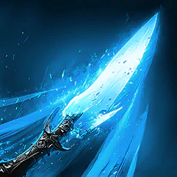
Quick Slice
brak danych
Łańcuch lewego przycisku, do 4 wrogów w 4 m. Kroki: Quick Slice, Breaking Slice (przywraca 105) i Swift Slice (przywraca 120).
Obrażenia tooltipa (1 / 10 / 20): 61 / 452 / 860
PvE (aion2.gg): +50% Multi-Hit, potem −1 s CD Insignia Explosion za trafienie (12). Od 16 „ignoruje Block i Evasion i zawsze krytyk” zastępuje Multi-Hit do poziomu 20.
Specjalizacje
- poziom 8+20% MP przywrócone
- poziom 8Pochłania 0,7% HP
- poziom 8+50% Multi-Hit
- poziom 12-1 s Insignia Explosion cooldown przy trafieniu
- poziom 16Ignoruje Block i Evasion i zawsze krytyk
karta skilla na aion2.gg · Aion 2 Companion (aion2.grimvane.app), wartości Global przy podanym poziomie skilla.
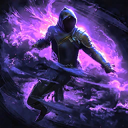
Shadowstrike
brak danych
Przechodzi za cel w 20 m, obraca go i ogłusza go na 3 s. 10 stagger.
Obrażenia tooltipa (1 / 10 / 20): 52 / 610 / 1 194
PvE (aion2.gg): +20% Critical Damage Boost na 10 s przy trafieniu.
Specjalizacje
- poziom 8+1 s Stun
- poziom 8+20% Critical Damage Boost na 10 s przy trafieniu
- poziom 850% Seal na 5 s
- poziom 1250% Root na 5 s
- poziom 16Trafia obszarowo
karta skilla na aion2.gg · Aion 2 Companion (aion2.grimvane.app), wartości Global przy podanym poziomie skilla.
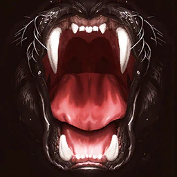
Savage Roar
brak danych
Łańcuch prawego przycisku, do 4 wrogów w 4 m. Kroki: Savage Roar, Savage Back Kick i Savage Smash. Każdy krok nakłada 1 Insignia na 10 s i zadaje 2 stagger.
Obrażenia tooltipa (1 / 10 / 20): 68 / 534 / 1 021
PvE (aion2.gg): +20% Skill Speed, potem do +12% obrażeń przy mniejszej liczbie celów, potem −1 s CD Shadowstrike za trafienie (12).
Specjalizacje
- poziom 8-20% MP cost
- poziom 8+20% Skill Speed
- poziom 8Do +12% obrażeń na mniej celów
- poziom 12-1 s Shadowstrike cooldown przy trafieniu
- poziom 16Savage Smash przyciąga pobliskie cele
karta skilla na aion2.gg · Aion 2 Companion (aion2.grimvane.app), wartości Global przy podanym poziomie skilla.
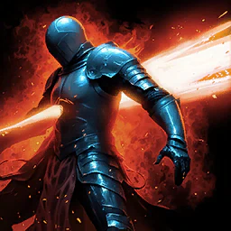
Ambush
brak danych
Trafia jeden cel w 4 m, +30% as atak z tyłu. 7 stagger.
Obrażenia tooltipa (1 / 10 / 20): 126 / 943 / 1 701
PvE (aion2.gg): 2 Insignia przy ataku z tyłu, potem 50% szansy na Whirlwind Slice (12), potem pochłania 3% HP.
Specjalizacje
- poziom 82 Insignias na 10 s na atak z tyłu
- poziom 8Pochłania 3% HP
- poziom 8Przebija Protective Shields
- poziom 1250% szansy na trigger Whirlwind Slice
- poziom 16+2 użycia z rzędu
karta skilla na aion2.gg · Aion 2 Companion (aion2.grimvane.app), wartości Global przy podanym poziomie skilla.
Heart Gore
brak danych
Usable po ciebie land crit. trafia do 4 wrogów w 4 m. 5 stagger.
Obrażenia tooltipa (1 / 10 / 20): 111 / 834 / 1 504
PvE (aion2.gg): najpierw do +20% Critical Hit przy mniejszej liczbie celów, potem Multi-Hit (12). Od 16 w drugim slocie reset CD przy krytyku, dopóki 20 nie otworzy trzeciego slotu.
Specjalizacje
- poziom 8Pochłania 0,7% HP
- poziom 81 Insignia na 10 s przy trafieniu
- poziom 8Do +20% Critical Hit na mniej celów
- poziom 12Always Multi-trafia
- poziom 16Reset CD przy krytyku
karta skilla na aion2.gg · Aion 2 Companion (aion2.grimvane.app), wartości Global przy podanym poziomie skilla.
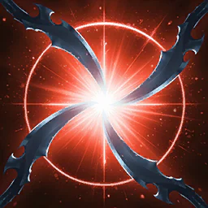
Storm Rampage
brak danych
Trafia one staggered cel w 4 m.
Obrażenia tooltipa (1 / 10 / 20): 107 / 637 / 1 049
PvE (aion2.gg): +120 MP przy trafieniu, potem Multi-Hit, potem −1 s do wszystkich CD za trafienie.
Specjalizacje
- poziom 8Pochłania 5% HP
- poziom 8Przywraca 120 MP przy trafieniu
- poziom 8Można używać w ruchu
- poziom 12Always Multi-trafia
- poziom 16-1 s do all cooldowns przy trafieniu
karta skilla na aion2.gg · Aion 2 Companion (aion2.grimvane.app), wartości Global przy podanym poziomie skilla.
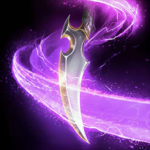
Whirlwind Slice
8
Usable na successful evasion. trafia jeden cel w 4 m z 40% szansy na stun na 3 s, 100% na NPCs. 7 stagger.
Obrażenia tooltipa (1 / 10 / 20): 300 / 1 497 / 2 320
aion2.gg: zostaje na randze 8. Opcja Ambush na 12 i tak otwiera go w połowie trafień. Specjalizacja: +50% Multi-Hit.
Specjalizacje
- poziom 8+50% Multi-Hit
- poziom 8Trafia obszarowo
- poziom 8+16 m range
- poziom 12+20% Stun chance
- poziom 1625% szansy na reset jego cooldown na evasion
karta skilla na aion2.gg · Aion 2 Companion (aion2.grimvane.app), wartości Global przy podanym poziomie skilla.
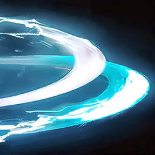
Flash Slice
brak danych
Moves do far side of cel w 4 m i trafia do 4 wrogów, 40% Blind na 3 s (100% na NPCs). 7 stagger.
Obrażenia tooltipa (1 / 10 / 20): 181 / 905 / 1 402
PvE (aion2.gg): +6 m zasięgu, potem drugie użycie z rzędu (12).
Specjalizacje
- poziom 8+2 s Blind
- poziom 8+6 m range
- poziom 8Do +20% obrażeń na więcej celów
- poziom 12+1 użycie z rzędu
- poziom 1650% szansy na stun blinded cel na 3 s
karta skilla na aion2.gg · Aion 2 Companion (aion2.grimvane.app), wartości Global przy podanym poziomie skilla.
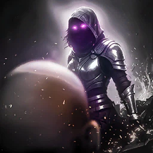
Infiltrate
brak danych
Po Dodge albo w locie, przechodzi za cel w 10 m, 50% Blind na 3 s (100% na NPCs). 10 stagger.
Obrażenia tooltipa (1 / 10 / 20): 239 / 945 / 1 417
PvE (aion2.gg): przywraca 300 Stamina (koszt jednego Dodge), potem cios Dark Strike (12).
Specjalizacje
- poziom 8Przywraca 300 Stamina
- poziom 8+10 m range
- poziom 8Przebija Protective Shields
- poziom 12Dodaje Dark Strike
- poziom 16+20% Blind chance
karta skilla na aion2.gg · Aion 2 Companion (aion2.grimvane.app), wartości Global przy podanym poziomie skilla.
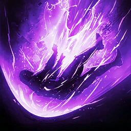
Shadow Fall
brak danych
Moves do stunned cel w 10 m i knocks it down na 3 s. przeciw Incapacitated Immunity it has 5% szansy na trigger. 10 stagger.
Obrażenia tooltipa (1 / 10 / 20): 465 / 1 836 / 2 754
aion2.gg: 3 Insignia przy trafieniu. Wymaga ogłuszonego celu (5% na odpornych), więc to skill do levelowania i PvP.
Specjalizacje
- poziom 8Pochłania 10% HP
- poziom 83 Insignias na 10 s przy trafieniu
- poziom 8−5 s CD
- poziom 12+1 s Knockdown
- poziom 16Też usable na blinded cel
karta skilla na aion2.gg · Aion 2 Companion (aion2.grimvane.app), wartości Global przy podanym poziomie skilla.
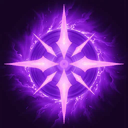
Insignia Explosion
brak danych
Selects cel w 20 m i trafia do 4 wrogów w 4 m of it, stunning na 3 s. obrażeń i stun chance grow z Insignia stacki, i stun chance doubles na NPCs. 7 stagger.
Obrażenia tooltipa (1 / 10 / 20): 663 / 2 065 / 3 055 with no stacks
PvE (aion2.gg): zostawia 2 Insignia po wybuchu, potem +50% Multi-Hit. Od 16 −3 s CD zastępuje Multi-Hit do poziomu 20.
Specjalizacje
- poziom 8Dodaje rotate effect
- poziom 8+50% Multi-Hit
- poziom 8Keeps 2 Insignias po explosion
- poziom 12+1 s Stun
- poziom 16−3 s CD
karta skilla na aion2.gg · Aion 2 Companion (aion2.grimvane.app), wartości Global przy podanym poziomie skilla.

Defiance
10 albo 1
Usuwa Stun, Knockdown, Airborne, Grab, Frost i Fear i daje Tenacity (status effect immunity) na 5 s. Cooldown reduction nie działa.
aion2.gg: ranga 10 daje 20% HP i krótszy CD (60 s na 1, 51 s na 10). Jeśli rzadko go używasz, zostaw 1 i włóż punkty w Heightened Sixth Sense.
Specjalizacje
- poziom 8Dodaje Storm Slice
- poziom 8Przywraca 1 000 Stamina
- poziom 8Przywraca 20% HP
- poziom 12+2 s Tenacity
- poziom 16+50% PvE i +25% PvP Damage Tolerance w trakcie Tenacity
karta skilla na aion2.gg · Aion 2 Companion (aion2.grimvane.app), wartości Global przy podanym poziomie skilla.
Pasywki
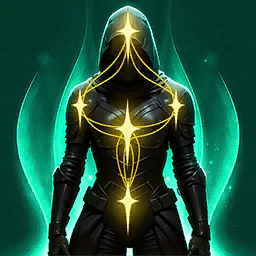
Heightened Sixth Sense
brak danych
+200 Evasion, +150 HP i +6% max HP; leczy 85 do 102 HP na evasion, once na 3 s
Poziom 10: +1 500 HP, +15% max HP, leczy 562 do 674 Na wyższym poziomie: +3 000 HP, +25% max HP, leczy 1 112 do 1 334
Pasywka nie ma specjalizacji.
karta skilla na aion2.gg · Aion 2 Companion (aion2.grimvane.app), wartości Global przy podanym poziomie skilla.
Exploit Weakness
brak danych
+100 Critical Hit. 25% szansy na +5,5% Attack na 10 s, i 7% chance przy krytyku do summon do 5 clones; każdy clone zadaje 17 obrażeń i nakłada Insignia na 10 s. każdy roll has wewnętrzny CD 1 s.
Poziom 10: +190 Crit, +10% Attack, 106 na clone Na wyższym poziomie: +290 Crit, +15% Attack, 172 na clone
Pasywka nie ma specjalizacji.
karta skilla na aion2.gg · Aion 2 Companion (aion2.grimvane.app), wartości Global przy podanym poziomie skilla.
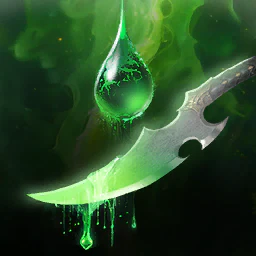
Apply Poison
brak danych
15% chance przy trafieniu do cut cel's incoming healing o 12% i poison it na 10 s, 233 obrażeń co sekundę; wewnętrzny CD 1 s
Poziom 10: -30% healing, 1 167 na second Na wyższym poziomie: -50% healing, 1 809 na second
Pasywka nie ma specjalizacji.
karta skilla na aion2.gg · Aion 2 Companion (aion2.grimvane.app), wartości Global przy podanym poziomie skilla.
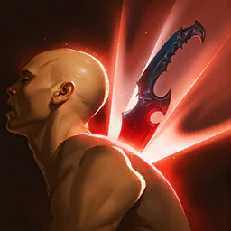
Rear Smite
brak danych
+3% Back Attack Damage Boost, +3% PvE Damage Boost, +1,5% PvP Damage Boost
Poziom 10: 7,5%, 7,5%, 3,75% Na wyższym poziomie: 12,5%, 12,5%, 6,25%
Pasywka nie ma specjalizacji.
karta skilla na aion2.gg · Aion 2 Companion (aion2.grimvane.app), wartości Global przy podanym poziomie skilla.
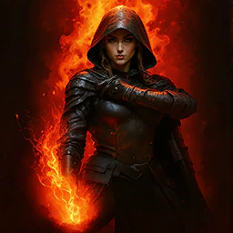
Assault Stance
brak danych
+6% Critical Damage Boost
Poziom 10: +15% Na wyższym poziomie: +25%
Pasywka nie ma specjalizacji.
karta skilla na aion2.gg · Aion 2 Companion (aion2.grimvane.app), wartości Global przy podanym poziomie skilla.
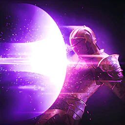
Impact Hit
brak danych
+11,2% Impact-type Chance, +0,3% Double Chance
Poziom 10: 22%, 3% Na wyższym poziomie: 34%, 6%
Pasywka nie ma specjalizacji.
karta skilla na aion2.gg · Aion 2 Companion (aion2.grimvane.app), wartości Global przy podanym poziomie skilla.
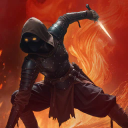
Ambush Stance
brak danych
Doskok albo movement skill daje Ambush Stance na 10 s, który has 50% chance za trafienie do zadaje 152 obrażeń, once na second
Poziom 10: 387 obrażeń Na wyższym poziomie: 556 obrażeń
Pasywka nie ma specjalizacji.
karta skilla na aion2.gg · Aion 2 Companion (aion2.grimvane.app), wartości Global przy podanym poziomie skilla.
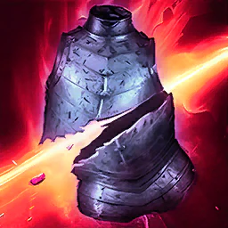
Defense Break
brak danych
Hitting staggered cel albo one under Impact-type status cuts jego Defense o 12% i Status Effect Resist o 11% na 10 s; CD 20 s
Poziom 10: -30% Defense, -20% resist Na wyższym poziomie: -50% Defense, -30% resist
Pasywka nie ma specjalizacji.
karta skilla na aion2.gg · Aion 2 Companion (aion2.grimvane.app), wartości Global przy podanym poziomie skilla.

Revitalization Contract
brak danych
+17% Status Effect Resist, +10% więcej na 5 s za trafienie taken podczas stunned, knocked down, airborne, frozen albo feared (do 10 stacki); leczy 35% of max HP przy 10% HP albo less, once na 60 s
Poziom 10: +35% resist, leczy 44% Na wyższym poziomie: +55% resist, leczy 54%
Pasywka nie ma specjalizacji.
karta skilla na aion2.gg · Aion 2 Companion (aion2.grimvane.app), wartości Global przy podanym poziomie skilla.
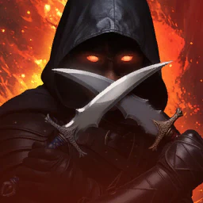
Determination
brak danych
228 obrażeń na trafia przeciw cel przy 30% HP albo less, once na second
Poziom 10: 433 obrażeń przy 39% HP albo less Na wyższym poziomie: 579 obrażeń przy 49% HP albo less
Pasywka nie ma specjalizacji.
karta skilla na aion2.gg · Aion 2 Companion (aion2.grimvane.app), wartości Global przy podanym poziomie skilla.
Stygmy
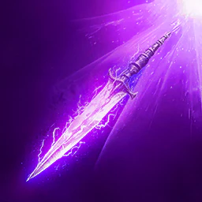
Throw Shadowblade
brak danych
Jeden cel w 20 m, Slow (-40% Move Speed) na 5 s; 15 stagger
Obrażenia tooltipa (1 / 10 / 20): 778 / 1 596 / 2 183
karta skilla na aion2.gg · Aion 2 Companion (aion2.grimvane.app), wartości Global przy podanym poziomie skilla.
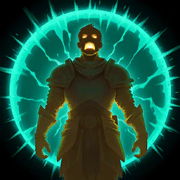
Evasion Stance
brak danych
Evades all obrażeń for krótką chwilę; przywraca 110 MP i Stamina once na evasion (200 przy 10, 300 przy 20)
karta skilla na aion2.gg · Aion 2 Companion (aion2.grimvane.app), wartości Global przy podanym poziomie skilla.
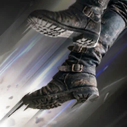
Shadowstep
brak danych
Jeden cel w 4 m, potem ciebie move back i zyskujesz Stealth na 3 s
Obrażenia tooltipa (1 / 10 / 20): 832 / 1 706 / 2 334
karta skilla na aion2.gg · Aion 2 Companion (aion2.grimvane.app), wartości Global przy podanym poziomie skilla.
Shadow Walk
brak danych
Stealth na 20 s, tylko poza walką
karta skilla na aion2.gg · Aion 2 Companion (aion2.grimvane.app), wartości Global przy podanym poziomie skilla.
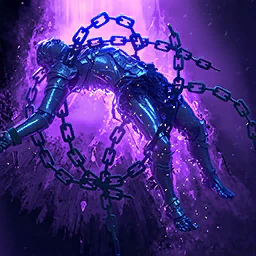
Aerial Bind
brak danych
Jeden cel w 4 m; 50% Airborne na 3 s, 100% na NPCs i na cele z 5 Insignias; 20 stagger
Obrażenia tooltipa (1 / 10 / 20): 837 / 1 717 / 2 349
karta skilla na aion2.gg · Aion 2 Companion (aion2.grimvane.app), wartości Global przy podanym poziomie skilla.
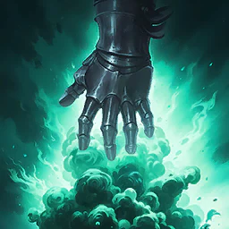
Smoke Bomb
brak danych
Jeden cel w 10 m, Blind na 5 s; 15 stagger
Obrażenia tooltipa (1 / 10 / 20): 966 / 1 981 / 2 710
karta skilla na aion2.gg · Aion 2 Companion (aion2.grimvane.app), wartości Global przy podanym poziomie skilla.
Savage Fang
brak danych
Do 4 wrogów w 4 m; nakłada 5 Insignias na 10 s; 50 stagger
Obrażenia tooltipa (1 / 10 / 20): 1 074 / 2 202 / 3 012
karta skilla na aion2.gg · Aion 2 Companion (aion2.grimvane.app), wartości Global przy podanym poziomie skilla.
Spiral Slice
brak danych
Doskakuje cel w 20 m i usuwa 1 buff, z 386 dodatkowe obrażenia na buff removed (792 przy 10, 1 084 przy 20); 20 stagger
Obrażenia tooltipa (1 / 10 / 20): 1 074 / 2 202 / 3 012
karta skilla na aion2.gg · Aion 2 Companion (aion2.grimvane.app), wartości Global przy podanym poziomie skilla.
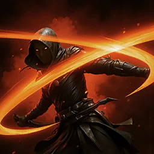
Triniel's Dagger
brak danych
Jeden cel w 4 m, +30% od behind; podnosi all of cel's cooldowns o 5% of their length; 20 stagger
Obrażenia tooltipa (1 / 10 / 20): 1 374 / 2 818 / 3 855
karta skilla na aion2.gg · Aion 2 Companion (aion2.grimvane.app), wartości Global przy podanym poziomie skilla.
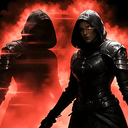
Illusive Clone
brak danych
Usuwa Heart Gore's cooldown i dodaje 20% of obrażeń dealt as dodatkowe obrażenia na 10 s (14,5 przy 10, 20 przy 20)
karta skilla na aion2.gg · Aion 2 Companion (aion2.grimvane.app), wartości Global przy podanym poziomie skilla.
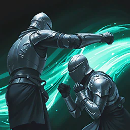
Evasion Contract
brak danych
Usuwa Slow i Root, +200 Evasion i Slow i Root immunity na 10 s (14,5 przy 10, 20 przy 20); cooldown zwiększa do nie apply
karta skilla na aion2.gg · Aion 2 Companion (aion2.grimvane.app), wartości Global przy podanym poziomie skilla.
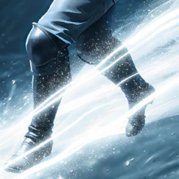
Swift Contract
brak danych
+20% Combat Speed na 10 s (14,5 przy 10, 20 przy 20)
karta skilla na aion2.gg · Aion 2 Companion (aion2.grimvane.app), wartości Global przy podanym poziomie skilla.

Assault Ambush
brak danych
Selects cel w 20 m i trafia do 4 wrogów w 4 m; 30% Blind na 5 s (100% na NPCs); do +20% Defense o cele hit
Obrażenia tooltipa (1 / 10 / 20): 977 / 2 003 / 2 740
karta skilla na aion2.gg · Aion 2 Companion (aion2.grimvane.app), wartości Global przy podanym poziomie skilla.
Build PvE
Plan PvE z poradnika aion2.gg (dane klienta EU/NA). Docelowej rangi większości skilli ten tekst nie zamyka jedną liczbą — specjalizacje są w kartach, a poziom zostaje „brak danych”, jeśli źródło go nie podaje.
- Stygmy grupy: Illusive Clone, Swift Contract, Triniel's Dagger i Savage Fang. Solo: Evasion Stance zamiast Savage Fang. Poziom każdej stygmy aion2.gg odsyła na stronę buildu, więc tu go nie dopisuję.
- Whirlwind Slice zostaje na 8. Defiance albo na 10 (20% HP i krótszy CD), albo na 1, a punkty idą w Heightened Sixth Sense.
- Quick Slice z doklejkami to silnik MP. Savage Roar i dwa kolejne kroki kosztują po 120 MP.
Źródła
- Aion 2 Companion — skille, pasywki, stygmy
- aion2.gg — lista skilli klasy
- aion2.gg — build PvE
- aion2data.com — dane klienta Global
Data tej strony: 11 listopada 2026. Edycja Global (Steam, EU). Nazwy skilli są po angielsku, tak jak w kliencie.